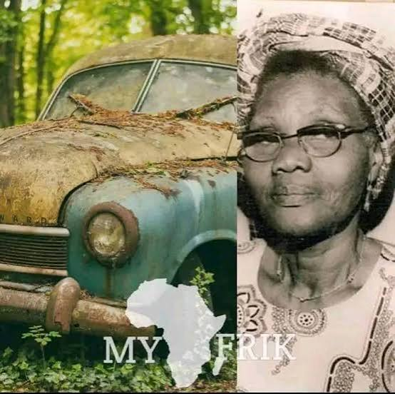
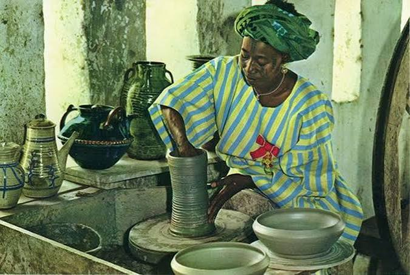
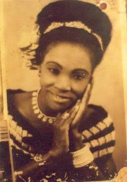
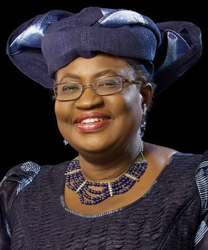
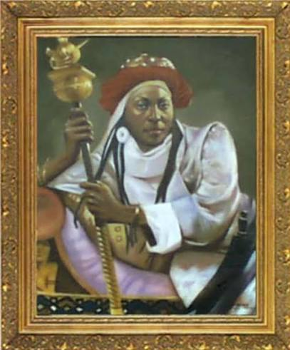

My mum, Mrs. Oluwabunmi Yusuff, is a remarkable woman who has always been a source of inspiration and support in my life.
Her unwavering dedication to her family and community has left a lasting impact on everyone she meets.
She is a true embodiment of strength, compassion, and resilience,she is the best.
Dr. Stella Adabehov is a trailblazer in her field, known for her groundbreaking research and contributions to science.
Her work has paved the way for future generations of scientists, and she continues to inspire young minds to pursue their passions fearlessly.
Mrs. Chimamanda is a celebrated author and advocate for social change.
Her powerful storytelling and thought-provoking narratives have captivated audiences worldwide, shedding light on important issues and encouraging dialogue on topics that matter.

Mrs. Funmilayo is a dedicated community leader who has tirelessly worked to improve the lives of those around her.
Her commitment to social justice and equality has made a significant difference in her community, and she continues to inspire others to take action for positive change.

Mrs. Ladi Kwali is a respected educator and mentor who has dedicated her life to empowering young people.
Her passion for learning and her ability to connect with students have made her a beloved figure in the educational community.

Mrs. Margaret is a distinguished professional known for her expertise and leadership in her field.
Her contributions have been recognized with several awards, and she continues to be a role model for others.
Mrs. Mo is a dedicated professional who has made significant contributions to her field.
Her work has been recognized with several awards, and she continues to be a role model for others.
Mrs. Natifast Balogun is a respected community member who has made valuable contributions to her locality.
Her dedication to public service and social development has earned her the admiration of many.

Mrs. Ngozi is a passionate advocate for education and social change.
Her tireless efforts to improve access to quality education have positively impacted countless lives, and she continues to inspire others to pursue their dreams.

Queen Amina of Zazzau is a revered historical figure known for her wisdom and leadership.
Her legacy continues to inspire generations, and her story remains a testament to the power of determination and courage.
Prof. Dora is a distinguished academic and researcher whose work has significantly advanced knowledge in her field.
Her dedication to education and mentorship has shaped the careers of many aspiring scholars.